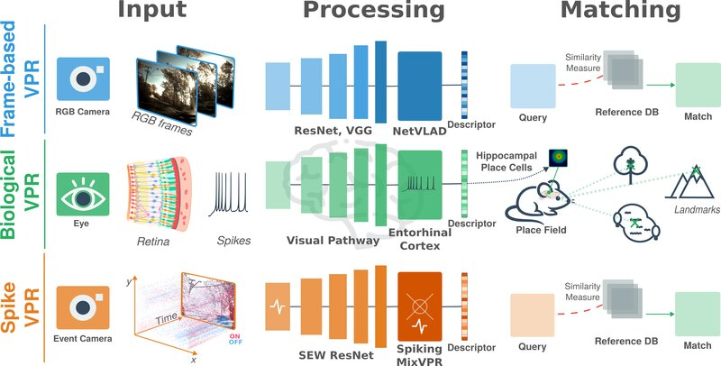
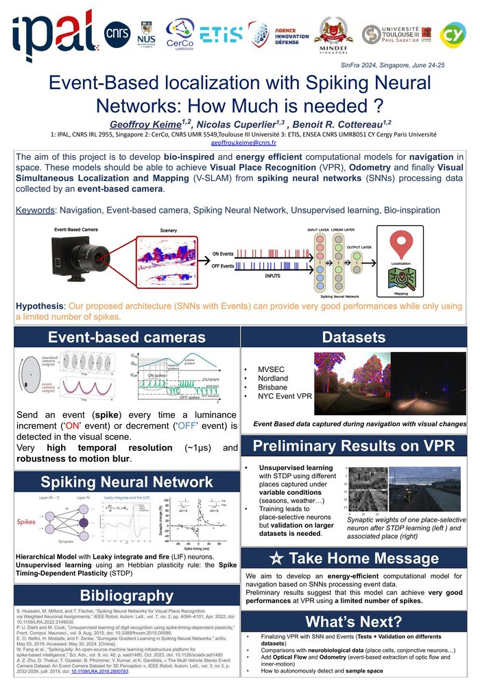

Geoffroy Keime
PhD Student
Centre de Recherche Cerveau & Cognition (CerCo), UMR5549
IPAL - Singapore
PhD Student
Centre de Recherche Cerveau & Cognition (CerCo), UMR5549
IPAL - Singapore
Welcome! I am a PhD student in Computer Science/Neuroscience, working at the intersection of Machine Learning and primate-based navigation models. My research focuses on developing robust and efficient Spiking Neural Networks for open navigation using data from event-based cameras, with a particular interest in applications towards neuromorphic computing.
Currently, I am part of the CerCo laboratory in Toulouse and IPAL in Singapore.
Prior to my PhD, I completed my Master's degree in Computer Science at CY University and ENSEA, where I specialized in artificial intelligence and bio-inspired models. I have also gained valuable industry experience through an internship in robotics, working on model-based grasping with an anthropomorphic robot.

Event-driven neuromorphic vision enables energy-efficient visual place recognition
Neuromorphic Computing and Engineering, 2026

Event-Based localization with Spiking Neural Networks: How Much is needed?
SinFra, Singapore, June 2024 · View on HAL